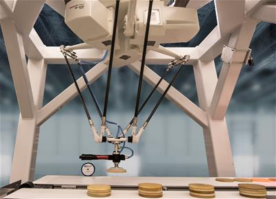
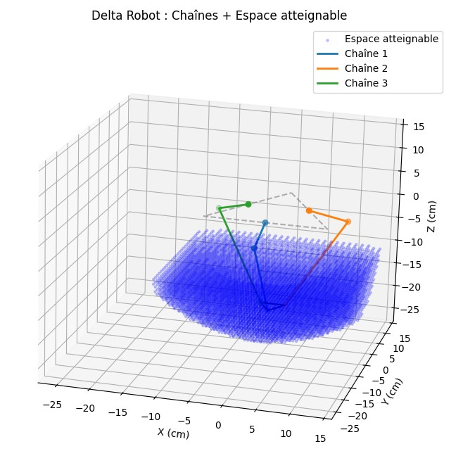
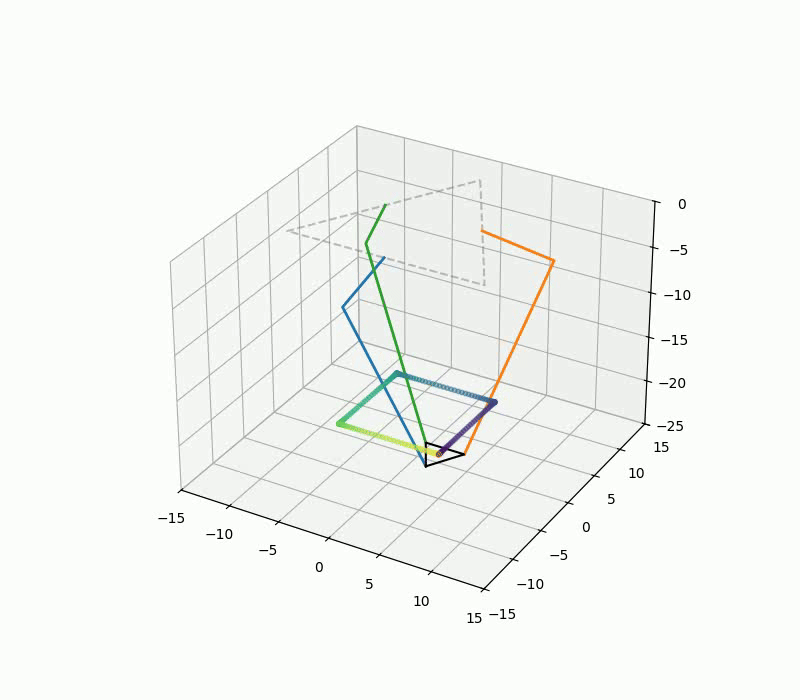
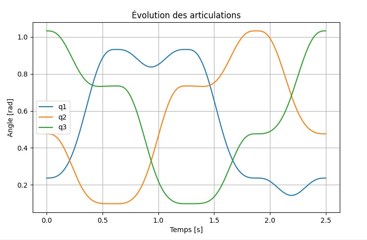
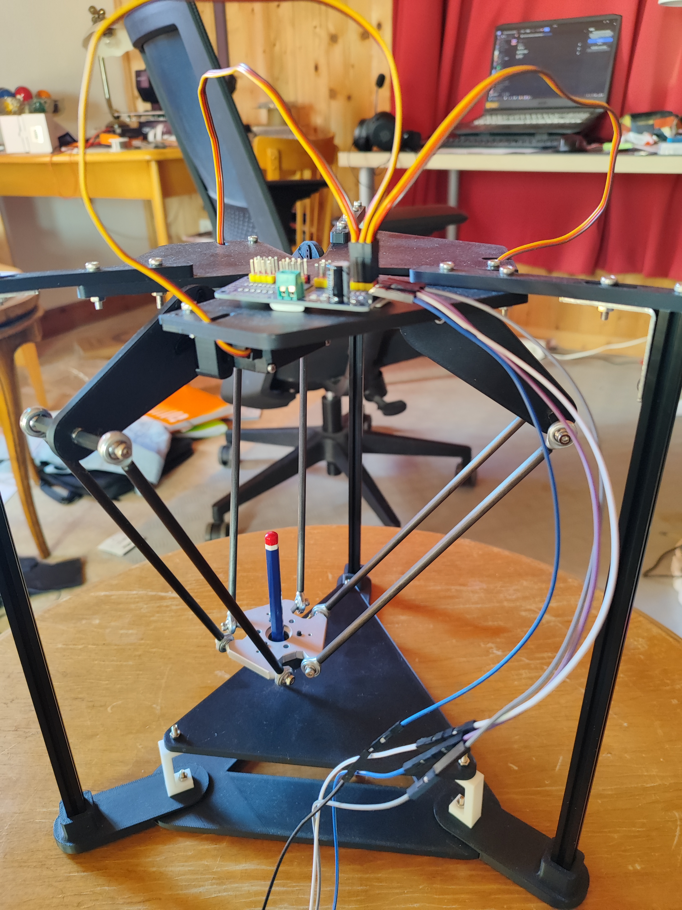

Robot Delta
Un robot Delta est un robot industriel de type parallèle, composé de trois bras reliés à une base fixe et à une plateforme mobile sur laquelle est monté l’outil (pince, ventouse, etc.). Contrairement aux robots classiques à bras articulés, ses moteurs sont tous situés sur la base, ce qui allège la partie mobile et permet des mouvements très rapides et précis.
Les robots Delta sont principalement utilisés dans les domaines nécessitant des manipulations rapides et répétitives. On les retrouve dans l’industrie agroalimentaire pour le tri et l’emballage, dans l’industrie pharmaceutique pour la manipulation de produits fragiles, ainsi que dans l’électronique pour l’assemblage de petites pièces. Ils sont particulièrement adaptés aux opérations de type pick-and-place (prendre et déposer des objets rapidement).
Robot Delta type utilisé dans l'industrie en général
Les principaux points forts des robots Delta sont leurs grande vitesse d’exécution, leurs précision élevée et leurs très bonne répétabilité. Ainsi ils sont très utilisé dans les machines sur faite mesure (dite spéciales) liés avec un peu de vision par ordinateur.
Modélisation Théorique
Les robots Delta sont des robots paralleles, j'ai expliqué comme calculer leurs modèles
géométriques et un peu plus ici.
Néanmoins les robots de type Delta sont un peu plus complexe que le robot scara 2 axes présenté dans ce cours. Ainsi pour ceux qui voudrait avoir la preuve des calculs, vous pouvez télécharger ou ouvrir le cours en pdf de Robert L. Williams II de l'université de l'Ohio. Il utilise une notation un peu différentes mais néanmoins assez similaire pour ne pas être perdu.
Le robot Delta possède un espace de travail spécifique, différent des robots seriel. Il est donc utile de le visualiser afin de mieux comprendre ses capacités et ses limites.

visualisation MGI & de l'espace de travail type d'un robot Delta
MGI + espace de travail d'un Robot Delta sur Python
import numpy as np
import matplotlib.pyplot as plt
from mpl_toolkits.mplot3d.art3d import Poly3DCollection
# ----------------------------
# 1. Constantes (en cm)
# ----------------------------
x, y, z = 0.0, 0.0, -20.0 # position de l’effecteur (Px, Py, Pz)
ub = 11 # côté de la base (triangle équilatéral)
wb = ub * np.sin(np.pi / 6) # projection sur l’axe Y
sb = 2*(wb / np.tan(np.pi / 6))
up = 2.2 # côté de la plateforme mobile
wp = up * np.sin(np.pi / 6)
sp = 2*(wp / np.tan(np.pi / 6)) # petite aide géométrique
L = 6.9 # longueur des bielles “épaule-coude”
l = 19.7 # longueur des bielles “coude-plateforme”
# ----------------------------
# 2. Constantes dérivées
# ----------------------------
a = wb - up
b = (sp / 2.0) - ((np.sqrt(3) / 2.0) * wb)
c = wp - (0.5 * wb)
# ----------------------------
# 3. Coefficients (E, F, G)
# ----------------------------
def compute_coeffs(X, Y, Z):
E1 = 2.0 * L * (Y + a)
F1 = 2.0 * Z * L
G1 = X**2 + Y**2 + Z**2 + a**2 + L**2 + 2.0 * Y * a - l**2
E2 = -L * (np.sqrt(3) * (X + b) + Y + c)
F2 = 2.0 * Z * L
G2 = X**2 + Y**2 + Z**2 + b**2 + c**2 + L**2 + 2.0 * (X * b + Y * c) - l**2
E3 = L * (np.sqrt(3) * (X - b) - Y - c)
F3 = 2.0 * Z * L
G3 = X**2 + Y**2 + Z**2 + b**2 + c**2 + L**2 + 2.0 * (-X * b + Y * c) - l**2
return (E1, F1, G1), (E2, F2, G2), (E3, F3, G3)
# ----------------------------
# 4. Calcul des t(i) et q(i)
# ----------------------------
def _calc_t(E, F, G):
disc = E**2 + F**2 - G**2
if disc < 0:
raise ValueError("Position hors domaine (discriminant < 0)")
return (-F - np.sqrt(disc)) / (G - E)
def inverse_kinematics(X, Y, Z):
coeffs = compute_coeffs(X, Y, Z)
t1, t2, t3 = (_calc_t(*c) for c in coeffs)
q1, q2, q3 = (2.0 * np.arctan(t) for t in (t1, t2, t3))
return np.degrees([q1, q2, q3])
q1, q2, q3 = inverse_kinematics(x, y, z)
print("Angles (°):", q1, q2, q3)
# ----------------------------
# 5. Géométrie des points B, A, P
# ----------------------------
B1 = np.array([0, -wb, 0])
B2 = np.array([(np.sqrt(3)/2)*wb, 0.5*wb, 0])
B3 = np.array([-(np.sqrt(3)/2)*wb, 0.5*wb, 0])
A1 = np.array([0, -wb-L*np.cos(np.radians(q1)), -L*np.sin(np.radians(q1))])
A2 = np.array([(np.sqrt(3)/2)*(wb+L*np.cos(np.radians(q2))),
0.5*(wb+L*np.cos(np.radians(q2))),
-L*np.sin(np.radians(q2))])
A3 = np.array([-(np.sqrt(3)/2)*(wb+L*np.cos(np.radians(q3))),
0.5*(wb+L*np.cos(np.radians(q3))),
-L*np.sin(np.radians(q3))])
P3 = np.array([x-sp/2, y+ wp, z])
P2 = np.array([x+sp/2, y+ wp, z])
P1 = np.array([x, y-up, z])
# base et plateau
triangle1 = np.array([0, ub, 0])
triangle2 = np.array([sb/2, -wb, 0])
triangle3 = np.array([-sb/2, -wb, 0])
# ----------------------------
# 6. Workspace
# ----------------------------
def reachable(X, Y, Z):
try:
_ = [_calc_t(*c) for c in compute_coeffs(X, Y, Z)]
return True
except ValueError:
return False
X_MIN, X_MAX = -15, 15 # cm
Y_MIN, Y_MAX = -15, 15
Z_MIN, Z_MAX = -35, -10
STEP = 1.0
workspace_pts = []
for X in np.arange(X_MIN, X_MAX, STEP):
for Y in np.arange(Y_MIN, Y_MAX, STEP):
for Z in np.arange(Z_MIN, Z_MAX, STEP):
if reachable(X, Y, Z):
workspace_pts.append([X, Y, Z])
workspace_pts = np.array(workspace_pts)
print("Nb points atteignables :", len(workspace_pts))
# ----------------------------
# 7. Plot final (robot + workspace)
# ----------------------------
fig = plt.figure(figsize=(9, 7))
ax = fig.add_subplot(111, projection='3d')
# nuage de point workspace
if len(workspace_pts) > 0:
ax.scatter(workspace_pts[:,0], workspace_pts[:,1], workspace_pts[:,2],
s=5, c='blue', alpha=0.2, label="Espace atteignable")
# robot chains B–A–P
B = [B1, B2, B3]
A = [A1, A2, A3]
P = [P1, P2, P3]
for i in range(3):
chain = np.vstack([B[i], A[i], P[i]])
ax.plot(chain[:, 0], chain[:, 1], chain[:, 2],
lw=2, label=f'Chaîne {i+1}')
ax.scatter(chain[:, 0], chain[:, 1], chain[:, 2], s=30)
# base
base = np.vstack([triangle1, triangle2, triangle3, triangle1])
ax.plot(base[:, 0], base[:, 1], base[:, 2], '--', color='gray', alpha=0.6)
# plateau
plateau = np.vstack([P1, P2, P3, P1])
ax.plot(plateau[:, 0], plateau[:, 1], plateau[:, 2], color='k')
# mise au carré des axes
lims = np.array([ax.get_xlim3d(), ax.get_ylim3d(), ax.get_zlim3d()]).flatten()
span = lims.max() - lims.min()
mid = (lims.max() + lims.min()) / 2
ax.set_xlim(mid - span/2, mid + span/2)
ax.set_ylim(mid - span/2, mid + span/2)
ax.set_zlim(mid - span/2, mid + span/2)
ax.set_xlabel('X (cm)')
ax.set_ylabel('Y (cm)')
ax.set_zlabel('Z (cm)')
ax.set_title('Delta Robot : Chaînes + Espace atteignable')
ax.legend()
plt.tight_layout()
plt.show()
MGD Robot Detla sur Python
import numpy as np
import matplotlib.pyplot as plt
# ----------------------------
# 1. Constantes (en cm)
# ----------------------------
q1 = 0.30292011
q2 = 0.39529913
q3 = 0.63404486
ub = 11 # côté de la base (triangle équilatéral)
wb = ub * np.sin(np.pi / 6) # projection sur l’axe Y
sb = 2*(wb / np.tan(np.pi / 6))
up = 2.2 # côté de la plateforme mobile
wp = up * np.sin(np.pi / 6)
sp = 2*(wp / np.tan(np.pi / 6)) # petite aide géométrique
l = 19.7
L = 6.9
fatal_radical: bool = False,
# ----------------------------
# 2. Postition des coudes
# ----------------------------
A1 = np.array([0, -wb-L*np.cos(q1), -L*np.sin(q1)])
A2 = np.array([(np.sqrt(3)/2)*(wb+L*np.cos(q2)), 0.5*(wb+L*np.cos(q2)), -L*np.sin(q2)])
A3 = np.array([-(np.sqrt(3)/2)*(wb+L*np.cos(q3)), 0.5*(wb+L*np.cos(q3)), -L*np.sin(q3)])
# ----------------------------
# 3. Centre des sphères
# ----------------------------
Av1 = np.array([0, -wb-L*np.cos(q1) + up, -L*np.sin(q1)])
Av2 = np.array([(np.sqrt(3)/2)*(wb+L*np.cos(q2)) -(sp/2), 0.5*(wb+L*np.cos(q2))-wp, -L*np.sin(q2)])
Av3 = np.array([-(np.sqrt(3)/2)*(wb+L*np.cos(q3))+(sp/2), 0.5*(wb+L*np.cos(q3))-wp, -L*np.sin(q3)])
# ----------------------------
# 4. Calcul Trialthération
# ----------------------------
p21 = Av2 - Av1
p31 = Av3 - Av1
r1 = r2 = r3 = l
d = np.linalg.norm(p21)
# Vecteur de base
u = p21/d
i = u.dot(p31)
v = p31 - u*i
v /= np.linalg.norm(v)
j = v.dot(p31)
w = np.cross(u, v)
# solution, toujours dans l'epace projeté
x = 0.5/d*(r1*r1 - r2*r2 + d*d)
y = 0.5/j*(r1*r1 - r3*r3 - 2*i*x + i*i + j*j)
radicand = r1*r1 - x*x - y*y
# Solution dans l'espace de base
sxy = Av1 + u*x + v*y # manque toujours 'z'
if radicand < 0:
if fatal_radical:
raise ValueError(f'Negative radicand {radicand}: no exact solutions')
if radicand <= 0:
sxy[np.newaxis, :]
z = np.sqrt(radicand)
sz = w*z # 'z',avant changement signe
sa = sxy + sz # First solution
sb = sxy - sz # Second solution
np.stack((sa, sb)) # solutions: 2*3
print(sa, sb)
De la même manière il peut être interessant de visualiser une trajectoire avec une loi de commande par interpolation d'ordre 5
Trajectoire carré par interpolation d'ordre 5
Et pour les différentes valeurs d'angles des articulations :
Valeurs d'angles des articulations de la trajectoire précédente
MGI Delta
import numpy as np
import matplotlib.pyplot as plt
def DELTA_MGI(x, y, z):
# ----------------------------
# 1. Constantes (en cm)
# ----------------------------
ub = 11 # côté de la base (triangle équilatéral)
wb = ub * np.sin(np.pi / 6) # projection sur l’axe Y
sb = 2*(wb / np.tan(np.pi / 6))
up = 2.2 # côté de la plateforme mobile
wp = up * np.sin(np.pi / 6)
sp = 2*(wp / np.tan(np.pi / 6)) # petite aide géométrique
L = 6.9 # longueur des bielles “épaule-coude”
l = 19.7 # longueur des bielles “coude-plateforme”
# ----------------------------
# 2. Constantes dérivées
# ----------------------------
a = wb - up
b = (sp / 2.0) - ((np.sqrt(3) / 2.0) * wb)
c = wp - (0.5 * wb)
# ----------------------------
# 3. Coefficients (E, F, G)
# ----------------------------
E1 = 2.0 * L * (y + a)
F1 = 2.0 * z * L
G1 = x**2 + y**2 + z**2 + a**2 + L**2 + 2.0 * y * a - l**2
E2 = -L * (np.sqrt(3) * (x + b) + y + c)
F2 = 2.0 * z * L
G2 = x**2 + y**2 + z**2 + b**2 + c**2 + L**2 + 2.0 * (x * b + y * c) - l**2
E3 = L * (np.sqrt(3) * (x - b) - y - c)
F3 = 2.0 * z * L
G3 = x**2 + y**2 + z**2 + b**2 + c**2 + L**2 + 2.0 * (-x * b + y * c) - l**2
# ----------------------------
# 4. Calcul des t(i) et q(i)
# ----------------------------
def _calc_t(E, F, G):
# On garde la racine « + » (branche A) ; pour la branche B, changer ±
disc = E**2 + F**2 - G**2
if disc < 0:
raise ValueError("Position hors du domaine d’atteinte : discriminant négatif")
return (-F - np.sqrt(disc)) / (G - E)
t1, t2, t3 = (_calc_t(*args) for args in [(E1, F1, G1),
(E2, F2, G2),
(E3, F3, G3)])
q1, q2, q3 = (2.0 * np.arctan(t) for t in (t1, t2, t3))
q = np.array([q1, q2, q3]) # angles d’épaule (en radians)
return q
Trajectoire carré par interpolation d'ordre 5 sur Python
import numpy as np
import matplotlib.pyplot as plt
from Delta_MGI import *
position_next = [[5,-5,-20],[5,5,-20],[-5,5,-20],[-5,-5,-20],[5,-5,-20]]
# tableau des positions cartésiennes et articulaires
positions_xyz = []
positions_qi = []
freq_sample = 50 # nombre d’échantillons
duree = 0.5
for i in range(len(position_next)-1): # pour fix le fait que ce soit un float > donc pas iterable
# =====================
# Paramètres initiaux
# =====================
position_ini = np.array(position_next[i])
position_fin = np.array(position_next[i+1])
# =====================
# Génération trajectoire
# =====================
# vecteur déplacement
deplacement = position_fin - position_ini
norme_eucli = np.linalg.norm(deplacement)
# vecteur direction normalisé
vecteur_p = deplacement / norme_eucli
# instants d’échantillonnage
echantillonage = np.linspace(0, duree, freq_sample)
# quintique
T = duree
a = 6 * norme_eucli / T**5
b = -15 * norme_eucli / T**4
c = 10 * norme_eucli / T**3
for t in echantillonage:
# loi temporelle (polynôme en temps normalisé)
tau = (t - 0)
s = a*tau**5 + b*tau**4 + c*tau**3
# position courante dans l’espace cartésien
pt = position_ini + s * vecteur_p
positions_xyz.append(pt)
# cinématique inverse delta → calcul des q_i (articulations)
qi = DELTA_MGI(pt[0], pt[1], pt[2])
positions_qi.append(qi)
# =====================
# Résultats
# =====================
# =====================
# Évolution des angles articulaires
# =====================
t = np.linspace(0, duree*len(position_next), len(positions_qi))
# conversion en tableau numpy
positions_xyz = np.array(positions_xyz)
positions_qi = np.array(positions_qi)
plt.figure(figsize=(8,5))
plt.plot(t, positions_qi[:,0], '-', label='q1')
plt.plot(t, positions_qi[:,1], '-', label='q2')
plt.plot(t, positions_qi[:,2], '-', label='q3')
plt.xlabel('Temps [s]')
plt.ylabel('Angle [rad]')
plt.title('Évolution des articulations')
plt.legend()
plt.grid(True)
plt.show()
# ============================
# Données d'entrée
# ============================
N = len(positions_xyz)
x_list, y_list, z_list = positions_xyz[:, 0], positions_xyz[:, 1], positions_xyz[:, 2]
q1_list, q2_list, q3_list = positions_qi[:, 0], positions_qi[:, 1], positions_qi[:, 2]
# ============================
# Paramètres géométriques
# ============================
ub = 11
wb = ub * np.sin(np.pi / 6)
sb = 2 * (wb / np.tan(np.pi / 6))
up = 2.2
wp = up * np.sin(np.pi / 6)
sp = 2 * (wp / np.tan(np.pi / 6))
L = 6.9
# Base fixe
B1 = np.array([0, -wb, 0])
B2 = np.array([(np.sqrt(3)/2)*wb, 0.5*wb, 0])
B3 = np.array([-(np.sqrt(3)/2)*wb, 0.5*wb, 0])
B = [B1, B2, B3]
# Triangle base
triangle1 = np.array([0, ub, 0])
triangle2 = np.array([sb/2, -wb, 0])
triangle3 = np.array([-sb/2, -wb, 0])
base_triangle = np.vstack([triangle1, triangle2, triangle3, triangle1])
# ============================
# Préparation figure
# ============================
plt.ion()
fig = plt.figure(figsize=(8, 7))
ax = fig.add_subplot(111, projection='3d')
# Base fixe
ax.plot(base_triangle[:, 0], base_triangle[:, 1], base_triangle[:, 2],
'--', color='gray', alpha=0.5)
lines = [ax.plot([], [], [], lw=2)[0] for _ in range(3)]
plateau_line, = ax.plot([], [], [], 'k')
# Plot de la trajectoire complète en fond
ax.scatter(positions_xyz[:, 0], positions_xyz[:, 1], positions_xyz[:, 2],
c=np.arange(len(positions_xyz)), cmap='viridis', s=10, alpha=0.5)
LIM = 15
ax.set_xlim(-LIM, LIM)
ax.set_ylim(-LIM, LIM)
ax.set_zlim(-25, 0)
for k in range(N):
x, y, z = x_list[k], y_list[k], z_list[k]
q1 = q1_list[k]
q2 = q2_list[k]
q3 = q3_list[k]
# Points A mis à jour avec les bons angles
A1 = np.array([0, -wb - L*np.cos(q1), -L*np.sin(q1)])
A2 = np.array([(np.sqrt(3)/2)*(wb + L*np.cos(q2)),
0.5*(wb + L*np.cos(q2)),
-L*np.sin(q2)])
A3 = np.array([-(np.sqrt(3)/2)*(wb + L*np.cos(q3)),
0.5*(wb + L*np.cos(q3)),
-L*np.sin(q3)])
A = [A1, A2, A3]
# Plateau mobile
P3 = np.array([x - sp/2, y + wp, z])
P2 = np.array([x + sp/2, y + wp, z])
P1 = np.array([x, y - up, z])
P = [P1, P2, P3]
# Mise à jour des chaînes
for i in range(3):
chain = np.vstack([B[i], A[i], P[i]])
lines[i].set_data(chain[:, 0], chain[:, 1])
lines[i].set_3d_properties(chain[:, 2])
# Plateau mobile
plateau = np.vstack([P1, P2, P3, P1])
plateau_line.set_data(plateau[:, 0], plateau[:, 1])
plateau_line.set_3d_properties(plateau[:, 2])
plt.draw()
plt.pause(0.01)
plt.ioff()
plt.show()
Hardware
Je souhaitais créer un robot autonome, sans dépendre d’un ordinateur externe. J’ai donc choisi d’utiliser un Raspberry Pi comme unité de commande principale. Cela me permet de gérer à la fois le calcul, le contrôle des moteurs sans avoir besoin d'un PC.
J'ai pris le modèle
Raspberry Pi 3 modèle B+
, ce qui est un peu too much pour simplement cet usage, mais je compte m'en servir aussi pour d'autre petit projet.
Je l'utilise avec mon ordinateur personnel en se connectant via SSH.
La premiere fois que l'on lance la Raspberry Pi, je conseil d'utiliser Advanced IP Scanner pour
connaitre son IP, et bien sur lors du setup avec Raspberry Imager bien autoriser la connexion SSH
et connecter la carte au wifi.
On peut aussi avoir un accès à l'interface graphique du système d'exploitation mis dans la Pi
avec un VNC, je conseil RealVNC Viewer qui est très facile d'utilisation et est fiable.
L’un des grands avantages du robot Delta est qu’il ne nécessite pas une très grande puissance pour fonctionner. J’ai donc pu utiliser 3 servomoteurs MG996R, qui offrent un bon compromis entre couple et prix.
Pour envoyer les signaux PWM de la carte jusqu'au servos j'utilise une carte PCA9685, largement suffisante.
Pour la structure mécanique, j’ai utilisé des tiges en fibre de carbone commandées sur AliExpress, car elles sont à la fois légères et rigides, ce qui est idéal pour un robot rapide comme le Delta. La structure est complétée par des éléments MakerBeam, qui permettent un assemblage simple et un tant soit peu robuste.
Pour tout le reste j'ai utilisé imprimante 3D, la 3D Creality Ender 3 V3 SE. Je ne peut que la recommander. Pour dessiner les pièces tout les logiciels de CAO sont OK tant que l'on peut exporter la pièce en format lisible par CrealityPrint. Pour ceux qui ne voudrait dépenser plusieur centaine d'euro FreeCAD est un logiciel gratuis qui marche tout aussi bien que Creo, SolidWorks ou CATIA pour du prototypage.
Montage et Resultats
Voici à quoi ressemble le robot après l'avoir monté :

Maquette de Robot Delta vu de haut
Il est interessant dans la phase de prototypage de découper les pièces entre les partie techniques et les grands plan pour ne par tout re imprimer en cas d'erreur.

Maquette de Robot Delta vu de dessous
La principale contrainte pour ce type de robot est la robustesse.
Maquette de Robot Delta
J'ai choisi de faire se déplacer le robot en suivant une loi de mouvement par interpolation linaire d'ordre 5, cela alliant efficacité et fluidité. Pour définir les trajectoires que va suivre le robot l'algorithme de trajectoire va lire des coordonnée dans l'espace operationnel écrites dans un document texte. A chaque itération on va aussi mettre à jours un autre document texte dans lequel on note la position actuelle pour quel soit sauvegarder si l'on sort du programme ou reboot la carte Pi.
Code Robot Delta IRL sur Python
import time
import numpy as np
from adafruit_servokit import ServoKit
# =====================
# Paramètres du hardware
# =====================
kit = ServoKit(channels=16) # 16 canaux PCA9685
servo_channels = [0, 1, 2] # Numéros des canaux des servos
angle_min = 0
angle_max = 180
# =====================
# Fonction pour envoyer les angles aux servos
# =====================
def envoyer_angles(angles):
for i, angle in enumerate(angles):
kit.servo[servo_channels[i]].angle = np.clip(angle, angle_min, angle_max)
# =====================
# Lire un .txt
# =====================
def read_line(filename, line_number):
with open(filename, "r") as file:
lines = file.readlines() # read all lines into a list
if 0 < line_number <= len(lines):
line = lines[line_number - 1].strip()
return line
# =====================
# Initialisation des servos
# =====================
#def init_servos():
# kit.servo[servo_channels[0]].angle = 180
# kit.servo[servo_channels[1]].angle = 180
# kit.servo[servo_channels[2]].angle = 180
# time.sleep(3)
# =====================
# Cinématique inverse DELTA
# =====================
def DELTA_MGI(x, y, z):
# Constantes géométriques (cm)
ub, up = 11, 2
wb = ub * np.sin(np.pi / 6)
wp = up * np.sin(np.pi / 6)
sp = wp / np.tan(np.pi / 6)
L, l = 6.9, 19.7
a = wb - up
b = (sp / 2.0) - ((np.sqrt(3) / 2.0) * wb)
c = wp - (0.5 * wb)
E1 = 2.0 * L * (y + a)
F1 = 2.0 * z * L
G1 = x**2 + y**2 + z**2 + a**2 + L**2 + 2.0 * y * a - l**2
E2 = -L * (np.sqrt(3) * (x + b) + y + c)
F2 = 2.0 * z * L
G2 = x**2 + y**2 + z**2 + b**2 + c**2 + L**2 + 2.0 * (x * b + y * c) - l**2
E3 = L * (np.sqrt(3) * (x - b) - y - c)
F3 = 2.0 * z * L
G3 = x**2 + y**2 + z**2 + b**2 + c**2 + L**2 + 2.0 * (-x * b + y * c) - l**2
def _calc_t(E, F, G):
disc = E**2 + F**2 - G**2
if disc < 0:
raise ValueError("Position hors du domaine d’atteinte : discriminant négatif")
return (-F - np.sqrt(disc)) / (G - E)
t1, t2, t3 = (_calc_t(*args) for args in [(E1, F1, G1),
(E2, F2, G2),
(E3, F3, G3)])
q1, q2, q3 = (2.0 * np.arctan(t) for t in (t1, t2, t3))
q = np.array([q1, q2, q3])
q = np.degrees(q)
q = 180-q
return q
# =====================
# Trajectoire quintique
# =====================
with open("/home/Documents/next_coord.txt", "r") as file:
lines_next = file.readlines() # read all lines into a list
nombre_pts = len(lines_next) /3
freq_sample = 50
temps_ini = 0.0
temps_fin = 0.3
for i in range(int(nombre_pts)):
position_ini = np.array([float(read_line("/home/Documents/last_coord.txt", 1)), float(read_line("/home/Documents/last_coord.txt", 2)), float(read_line("/home/Documents/last_coord.txt", 3))])
position_fin = np.array([float(read_line("/home/Documents/next_coord.txt", 1+(i*3))), float(read_line("/home/Documents/next_coord.txt", 2+(i*3))), float(read_line("/home/Documents/next_coord.txt", 3+(i*3)))])
deplacement = position_fin - position_ini
norme_eucli = np.linalg.norm(deplacement)
vecteur_p = deplacement / norme_eucli
echantillonage = np.linspace(temps_ini, temps_fin, freq_sample)
# Coefficients quintiques
T = temps_fin - temps_ini
a = 6 * norme_eucli / T**5
b = -15 * norme_eucli / T**4
c = 10 * norme_eucli / T**3
# =====================
# Envoi des commandes aux servos
# =====================
#init_servos()
for t in echantillonage:
tau = t - temps_ini
s = a * tau**5 + b * tau**4 + c * tau**3
pt = position_ini + s * vecteur_p
qi = DELTA_MGI(pt[0], pt[1], pt[2])
envoyer_angles(qi)
time.sleep((temps_fin - temps_ini) / freq_sample)
# ecriture dans le txt pour keep track
with open("/home/Documents/last_coord.txt", "w") as file:
for value in position_fin:
file.write(str(value) + "\n")
Ainsi après avoir porter nos code sur la Pi et l'avoir adapté au hardware (partie assez fastidieuse avec la lecture des docs de chaque composant) on peut déplacer le robot Delta dans l'espace !
Robot Delta en mouvement
On peut tester le robot en dessinant quelques formes géométrique et voir si le robot les reproduits bien :
Robot Delta Dessin carré décalé de 15°
On voit que les traits ne sont pas parfaitement droit. C'est du à plusieurs choses :
- La robustesse est trop faible, le robot bouge s'il se déplace vite
- Les pas minimum des servos sont trop grands
- On ne marque pas assez l'arret aux différents points
Malgrés tout je suis content du résultat qui, pour les moyens mis en oeuvre, fonctionne bien, est rapide et relativement fluide.
Robot Delta déplacement Haut-Bas
Voila qui conclue mon projet de robot Delta. J'espere qu'il vous aura plus.